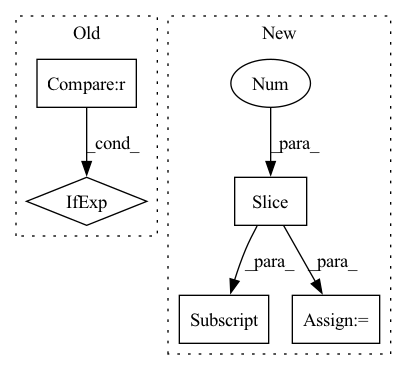

Pattern ID :28329
Before Change
out.log_softmax(dim=-1).view(-1), k=beam, dim=-1
)
best_logp = (
logp_targets[0]
if positions[0] != blank_id
else logp_targets[1]
)
// Extend hyp by selection
for j in range(logp_targets.size(0)):After Change
best_logp = logp_targets[0]
// concat blank_id
logp_targets = torch.cat((logp_targets, out.view(-1)[0:1] ))
positions = torch.cat(
(
positions + 1,In pattern: SUPERPATTERN
Frequency: 3
Non-data size: 5
Instances Fragment ID: 83613071
Project Name: speechbrain/speechbrain
Commit Name: 4f184ec4401d29785bf25a773f29facf0a108f82
Time: 2020-11-03
Author: ff936tw@gmail.com
File Name: speechbrain/decoders/transducer.py
M Class Name: AnonimousClass
N Class Name: AnonimousClass
M Method Name: transducer_beam_search_decode(11)
N Method Name: transducer_beam_search_decode(11)
M Parent Class:
N Parent Class:
M File Name: speechbrain/decoders/transducer.py
N File Name: speechbrain/decoders/transducer.py
M Start Line: 476
M End Line: 526
N Start Line: 449
N End Line: 534
Before Change
if use_anchor_free_mode:
bbox_process = lambda bb: to_one_hot_with_class_mark(tf.concat([bb[0], tf.cast(tf.expand_dims(bb[1], -1), bb[0].dtype)], axis=-1), num_classes)
else:
grid_zero_start = True if anchor_grid_zero_start == "auto" else anchor_grid_zero_start
anchors = anchors_func.get_anchors(input_shape[:2], anchor_pyramid_levels, anchor_aspect_ratios, anchor_num_scales, anchor_scale, grid_zero_start)
num_anchors = anchors.shape[0]
empty_label = tf.zeros([num_anchors, 4 + num_classes + 1]) // All 0After Change
// Don"t need anchors here, anchor assigning is after getting model predictions.
bbox_process = lambda bb: to_one_hot_with_class_mark(tf.concat([bb[0], tf.cast(tf.expand_dims(bb[1], -1), bb[0].dtype)], axis=-1), num_classes)
elif use_yolor_anchors_mode:
anchor_ratios, feature_sizes = anchors_func.get_yolor_anchors(input_shape[:2] , anchor_pyramid_levels, is_for_training=True)
total_anchors = tf.cast(anchor_ratios.shape[1] * tf.reduce_sum(feature_sizes[:, 0] * feature_sizes[:, 1]), tf.int32)
empty_label = tf.zeros([total_anchors, 4 + num_classes + 1]) // All 0
bbox_process = lambda bb: __yolor_bboxes_labels_batch_func__(bb[0], bb[1], anchor_ratios, feature_sizes, empty_label, num_classes) Fragment ID: 83613068
Project Name: leondgarse/keras_cv_attention_models
Commit Name: df3cf1ce0ac4b02a9c73496b1a583b9a892c7b0a
Time: 2022-03-25
Author: leondgarse@gmail.com
File Name: keras_cv_attention_models/coco/data.py
M Class Name: AnonimousClass
N Class Name: AnonimousClass
M Method Name: init_dataset(18)
N Method Name: init_dataset(19)
M Parent Class:
N Parent Class:
M File Name: keras_cv_attention_models/coco/data.py
N File Name: keras_cv_attention_models/coco/data.py
M Start Line: 363
M End Line: 425
N Start Line: 376
N End Line: 447
Before Change
class UNet3D:
def __init__(self):
ups = [16,32,64,128,256]
self.encoders = [BasicModule(ups[i] if i != 0 else 1, ups[i], ups[i+1]) for i in range(4)]
self.decoders = [BasicModule(ups[-1-i] + ups[-2-i], ups[-2-i], ups[-2-i]) for i in range(3)]
self.final_conv = nn.Conv2d(32, 1, (1,1,1))
After Change
self.input_block = DownsampleBlock(in_channels, filters[0], stride=1)
self.downsample = [DownsampleBlock(i, o) for i, o in zip(inp, out)]
self.bottleneck = DownsampleBlock(filters[-1], filters[-1])
self.upsample = [UpsampleBlock(filters[-1], filters[-1])] + [UpsampleBlock(i, o) for i, o in zip(out[::-1], inp[::-1] )]
self.output = {"conv": nn.Conv2d(filters[0], n_class, kernel_size=(1, 1, 1))}
def __call__(self, x): Fragment ID: 83613072
Project Name: geohot/tinygrad
Commit Name: 5d212864b5d00e537c43c6124bd57cb68284f94e
Time: 2023-05-28
Author: 39754370+jla524@users.noreply.github.com
File Name: models/unet3d.py
M Class Name: UNet3D
N Class Name: UNet3D
M Method Name: __init__(3)
N Method Name: __init__(1)
M Parent Class:
N Parent Class:
M File Name: models/unet3d.py
N File Name: models/unet3d.py
M Start Line: 21
M End Line: 25
N Start Line: 27
N End Line: 34